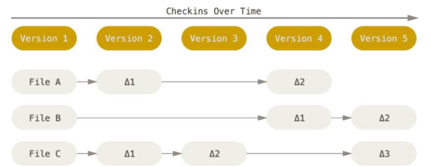

All Posts
Mastering AWS Identity and Access Management (IAM): A Comprehensive Guide
- 12 May 2022
Blog Post Publish Date: 2022/05/12
In the dynamic realm of Amazon Web Services (AWS), managing user access and permissions is paramount for maintaining a secure and efficient cloud environment. AWS Identity and Access Management (IAM) is a fundamental AWS service dedicated to orchestrating user access and permission protocols. In this blog post, we will delve into the intricate world of IAM, covering essential concepts and best practices for effective user and permission management.
AWS Well-Architected Framework: A Beginner’s Guide to Building Robust Cloud Solutions
- 11 May 2022
Blog Post Publish Date: 2022/05/11
Welcome to our beginner-friendly guide on the AWS Well-Architected Framework! If you’re new to the world of cloud computing and Amazon Web Services (AWS), you’re in the right place. This guide aims to provide a clear and simple understanding of the AWS Well-Architected Framework, equipping you with the knowledge to build solid cloud solutions. Understanding AWS Well-Architected Framework
AWS Account Foundation
- 10 May 2022
Blog Post Publish Date: 2022/05/10
In this article, we will delve into the pillars that underpin AWS account structure, understanding the significance of Accounts Foundation, the pivotal role of AWS Accounts, effective organization through AWS Organization, the implementation of security policies with SCP - Security Control Policy, and finally, the relevance of Support Center Plans. We will address each of these topics in detail, providing valuable insights to optimize your AWS cloud infrastructure.

Cloud Basic Concepts
- 09 May 2022
Blog Post Publish Date: 2022/05/09
This section covers the fundamental concepts of Cloud Computing, including its definition, advantages and disadvantages, cloud models, and deployment models.
Understanding Status States Change Commands
- 07 May 2021
Blog Post Publish Date: 2021/05/07
In Git, a file can exist in three main areas:

Understanding Remote and Local Repositories
- 06 May 2021
Blog Post Publish Date: 2021/05/06
In the world of Git, comprehending the distinction between a local repository and a remote repository is pivotal. Let’s embark on a journey to uncover the nuances through some common Git commands that underscore these differences.
Demystifying: $ git log
- 05 May 2021
Blog Post Publish Date: 2021/05/05
The git log command is a powerful tool in Git for viewing the commit history within a repository. It provides a comprehensive overview of commits, allowing you to track changes, understand commit details, and navigate through your project’s development timeline.
Demystifying: $ git config
- 04 May 2021
Blog Post Publish Date: 2021/05/04
The git config command allows for local customization of the Git utility. It enables setting the name and email of the author contributing to the repository, specifying the text editor Git will use when input is required, among other functionalities.
Demystifying: $ git branch/tag
- 03 May 2021
Blog Post Publish Date: 2021/05/03
Branches and tags are essential aspects of Git, allowing developers to manage their project’s codebase effectively and mark significant milestones. In this guide, we’ll explore how to work with branches and tags in Git.
Exploring Git: CLI vs. Graphical Interfaces
- 02 May 2021
Blog Post Publish Date: 2021/05/02
When it comes to using Git, there are two primary approaches: through its Command Line Interface (CLI) — a powerful command-line utility — and via graphical interface solutions. Let’s delve into both and understand their pros and cons.
Git Overview
- 01 May 2021
Blog Post Publish Date: 2021/05/01
Git is a Version Control System, designed to manage digital file content development flows in an objective, productive, performant, and distributed manner. Its usage is broad, spanning across both OpenSource and Enterprise projects, especially those developed collaboratively. Currently, the predominant languages in its source code are C, Shell, and Perl, which are accessible on GitHub git/git.
